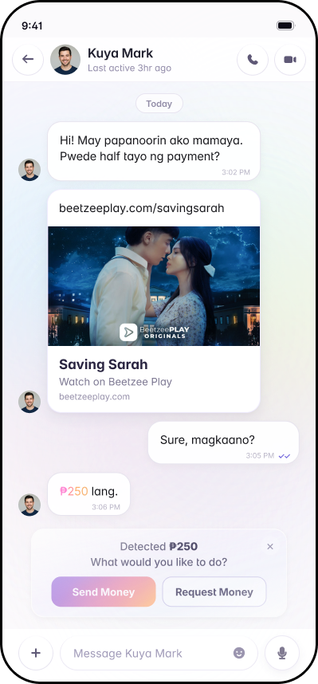
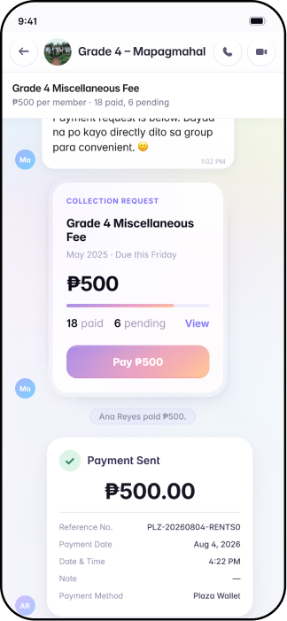
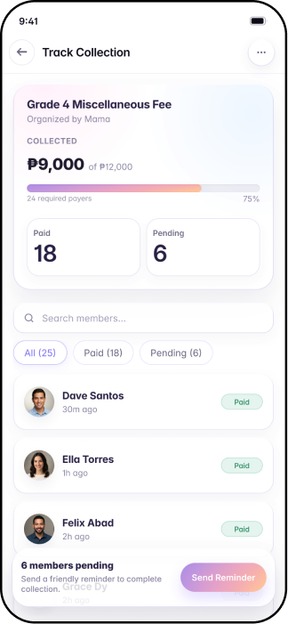
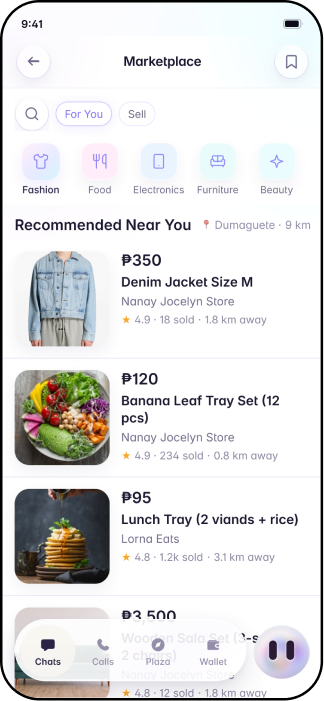
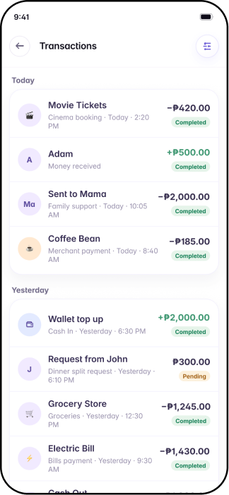
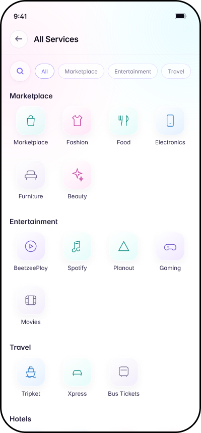
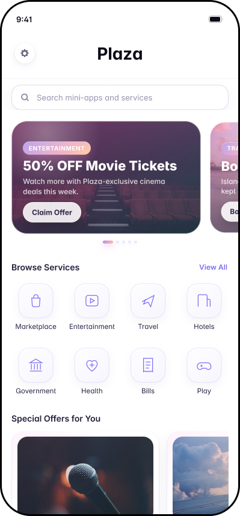

Home
Introduces the platform’s primary services and gives users clear starting points.
UI/UX DESIGN

Introduces the platform’s primary services and gives users clear starting points.
Allows users to browse and discover available services.
Keeps conversations between users and providers organized.
Presents essential information before users continue with a transaction.
Guides users through a clear and focused payment process.
Collects account details, activity, and preferences in one place.
The Chats screen is the home base, showing pending payment requests at the top so users can settle them without opening a conversation. Inside a chat, a quick action menu lets users send or request money, share photos, locations, and voice messages, or ask the AI assistant for help. Requests can go straight to a contact or be shared as a QR code or payment link, even with people not yet on Plaza.
Group Collections let organizers set an amount and due date, track who has paid, and send reminders to pending members.


The Marketplace lets users browse nearby items, chat with sellers, and pay securely, with order tracking in the same thread. Sellers can list items with up to 10 photos, save drafts, and preview listings before publishing.


The Plaza hub gathers mini-apps and partner services like entertainment, travel, hotels, bills, and government services in one place.


The Wallet shows the user's balance, top-up options, and a full transaction history, while a mascot shortcut on the Chats screen gives quick access to the wallet, notifications, and the assistant.